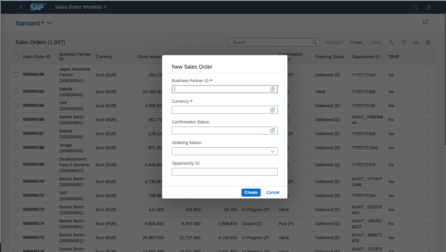

You can enable this feature on list reports and worklist applications having a single view in
a list page. This can be done in the manifest setting by adding the property
createWithParameterDialog and passing the properties of related
entity set as follows:
"createWithParameterDialog" : {
"fields" : {
"<fieldName>" : {"path":"<fieldname>"},
"<fieldName>" : {"path":"<fieldname>"}
}
With this setting, the option to create objects using a dialog appears on the list report application.
"sap.ui.generic.app": {
"_version": "1.3.0",
"pages": {
"ListReport|STTA_C_SO_SalesOrder_ND": {
"entitySet": "STTA_C_SO_SalesOrder_ND",
"component": {
"name": "sap.suite.ui.generic.template.ListReport",
"list": true,
"settings": {
"multiSelect": true,
"isWorklist": true,
"tableSettings": {
"createWithParameterDialog" : {
"fields" : {
"BusinessPartnerID":{"path": "BusinessPartnerID"},
"CurrencyCode" : {"path":"CurrencyCode"},
"BillingStatus" : {"path":"BillingStatus"},
"DeliveryStatus" : {"path":"DeliveryStatus"},
"OpportunityID" : {"path":"OpportunityID"}
}
}
}
}
},
"pages": {
..............
..............
}
}
}
}This feature is only supported for main object creation from list report page. If this feature is enabled, navigation to an object page in create mode is not allowed. However, you can navigate to the object page in display mode to modify objects.
Draft state is not maintained when an object is created using dialog.
Ensure that the properties are related to the entities.
Ensure that all the mandatory fields of the entities are part of the create dialog.
Object creation via dialog is supported only in list reports and worklist applications having a single table in a list page.
It is currently not possible to create an object with prefilled default values and filters using the dialog. For more information, see Prefilling Fields When Creating a New Entity Using an Extension Point.
Customization of Dialog Title and Buttons
The default title of the dialog is New Object and the key in i18n file is CREATE_DIALOG_TITLE.
You can change this by redefining the key in application or in the SAPUI5 Visual Editor. The default values of the buttons on dialog
are Create and Cancel, which you can change in SAPUI5 Visual Editor.
The content for this feature for SAP Fiori elements for OData V4 is covered in the topic Prefilling Fields When Creating a New Entity.